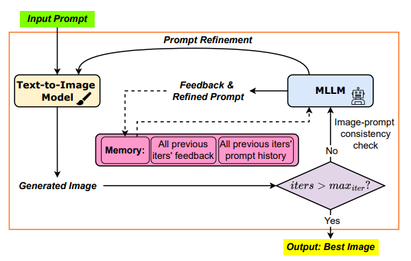
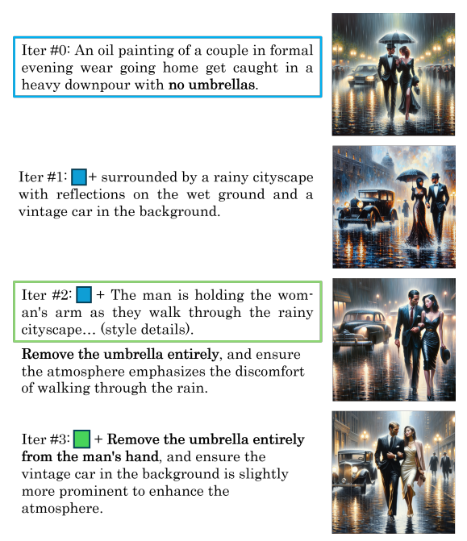
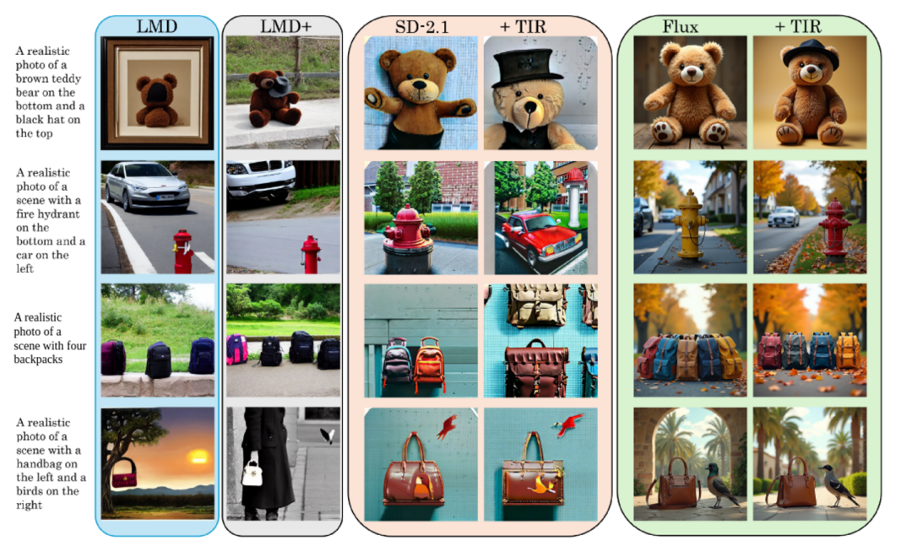
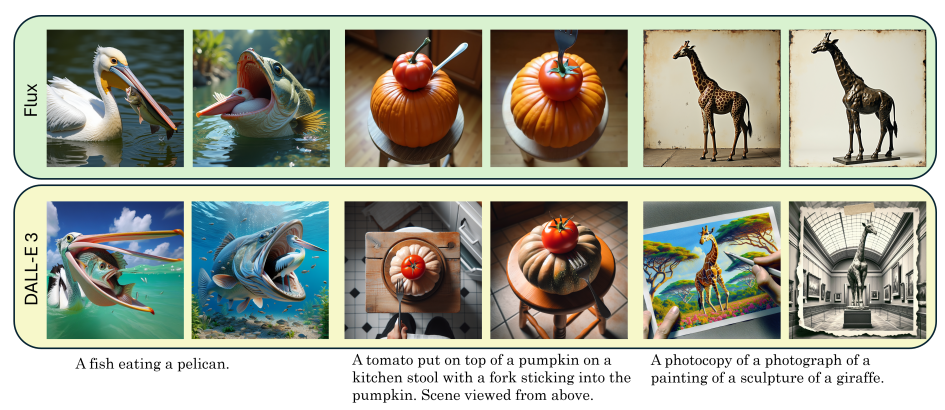
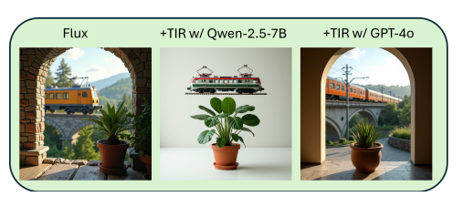
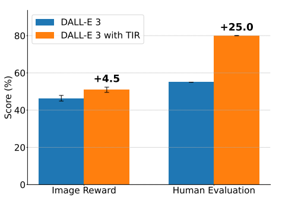
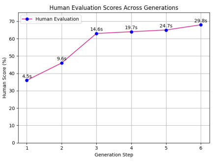

Highlights
Training-free
No fine-tuning, no layout or bounding-box supervision.
MLLM-agnostic
Consistent gains whether GPT-4o or Qwen2.5-VL-7B judges the images.
56.7 → 69.6
+12.9 average accuracy gain for Flux model, across negation, numeracy, attribute, and spatial tasks on the LLM-grounded Diffusion benchmark.
60.37 → 68.04
+7.67 point gain in overall GenEval score for DALL-E 3, across position, counting, single-object, two-object, color attribute, and color tasks.
Method

- Generate an image from the current prompt.
- An MLLM compares the image against the original prompt and identifies what's missing or wrong.
- The MLLM rewrites the prompt, using that feedback and every refinement made so far.
- Regenerate the image from the new prompt, and repeat.
No fine-tuning, no layout or bounding-box supervision. Works with any text-to-image model, including closed APIs.

Results
Qualitative



Benchmarks
LLM-grounded diffusion benchmark. TIR improves every backbone tested, with the largest gains on negation and numeracy. MLLM: GPT-4o
| Method | Negation | Numeracy | Attribute | Spatial | Average |
|---|---|---|---|---|---|
| MultiDiffusion | 29.0 | 28.0 | 26.0 | 39.0 | 30.5 |
| Backward Guidance | 22.0 | 37.0 | 26.0 | 67.0 | 38.0 |
| BoxDiff | 22.0 | 30.0 | 37.0 | 71.0 | 40.0 |
| LayoutGPT + GLIGEN | 36.0 | 65.0 | 26.0 | 78.0 | 51.3 |
| LMD | 100.0 | 40.0 | 50.5 | 38.7 | 57.3 |
| LMD+ | 100.0 | 50.9 | 63.5 | 42.0 | 64.1 |
| SD-1.5 | 35.0 | 40.0 | 42.0 | 38.0 | 38.75 |
| w/ TIR | 80.0 | 51.7 | 30.0 | 54.5 | 54.0 +15.25 |
| SD-2.1 | 45.0 | 50.6 | 18.0 | 44.5 | 39.5 |
| w/ TIR | 85.0 | 56.0 | 18.0 | 43.0 | 50.5 +11.0 |
| Flux | 10.0 | 52.2 | 83.0 | 81.5 | 56.7 |
| w/ TIR | 55.0 | 64.7 | 81.8 | 77.0 | 69.6 +12.9 |
| DALL-E 3 | 31.6 | 44.5 | 73.0 | 81.0 | 57.5 |
| w/ TIR | 73.7 | 49.2 | 71.0 | 83.0 | 69.2 +11.7 |
GenEval. The biggest lift is on position and counting; single-object prompts were already near ceiling. MLLM: GPT-4o
| Model | Position | Counting | Single Obj. | Two Object | Color Attr. | Colors | Overall |
|---|---|---|---|---|---|---|---|
| Flux | 19.00 | 68.75 | 100.00 | 75.76 | 48.00 | 77.66 | 64.86 |
| w/ TIR | 49.00 | 71.25 | 98.75 | 80.81 | 47.00 | 80.85 | 71.27 +6.41 |
| DALL-E 3 | 34.00 | 48.75 | 96.25 | 77.78 | 31.00 | 74.47 | 60.37 |
| w/ TIR | 45.00 | 60.00 | 96.25 | 82.83 | 38.00 | 86.17 | 68.04 +7.67 |
TIR improving Flux performance. MLLM: Qwen2.5-VL-7B
| Model | Position | Counting | Single Obj. | Two Object | Color Attr. | Colors | Overall |
|---|---|---|---|---|---|---|---|
| Flux | 19.00 | 68.75 | 100.00 | 75.76 | 48.00 | 77.66 | 64.86 |
| w/ TIR | 29.00 | 67.50 | 98.75 | 86.87 | 44.00 | 81.91 | 68.01 +3.15 |
DrawBench

How many rounds

Citation
@inproceedings{khan2025test,
title={Test-time prompt refinement for text-to-image models},
author={Khan, Mohammed Abdul Hafeez and Jain, Yash and Bhattacharyya, Siddhartha and Vineet, Vibhav},
booktitle={Proceedings of the IEEE/CVF International Conference on Computer Vision},
pages={6565--6575},
year={2025}
}